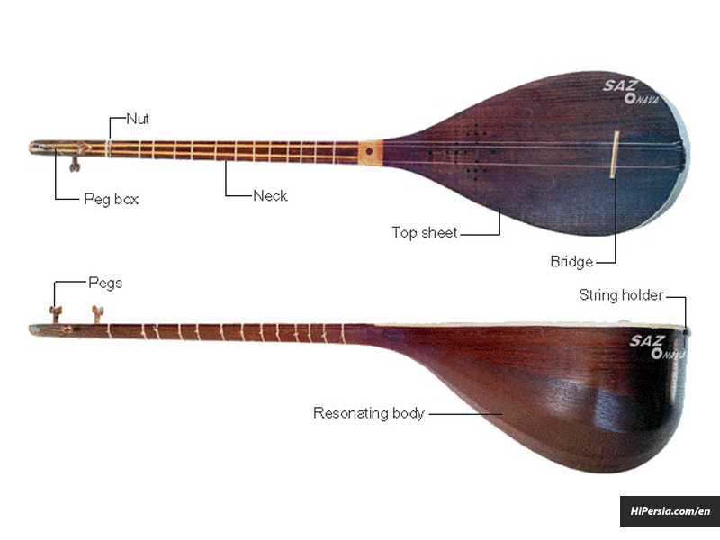

<div class="text">
    
  <p>
    Dombyra is a two-stringed, multi-keyed musical instrument in the culture of
    the Kazakhs, Nogays and Kalmyks. The dombra, which was first used in the
    framework of the epic tradition to accompany songs, tolgau, and terme, later
    contributed to the formation of the genre of instrumental works - tunes.
  </p>
</div>
